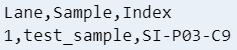

2. cellranger mkfastq の実行¶
この項では cellranger mkfastq を使用して FASTQ を生成します。
公式ドキュメント： Generating FASTQs with cellranger mkfastq
2.1. コマンドとオプション¶
設定ファイルのサンプルが提供されていますので、ダウンロードしておきます。
cd /work
mkdir data
cd data
wget http://cf.10xgenomics.com/supp/cell-exp/cellranger-tiny-bcl-1.2.0.tar.gz
wget http://cf.10xgenomics.com/supp/cell-exp/cellranger-tiny-bcl-simple-1.2.0.csv
wget http://cf.10xgenomics.com/supp/cell-exp/cellranger-tiny-bcl-samplesheet-1.2.0.csv
ダウンロードしたファイルを解凍します。
tar -xzvf cellranger-tiny-bcl-1.2.0.tar.gz
ここまでの作業により、データは以下のように配置されているはずです。
/work/
├── cellranger-3.1.0/
│
├── data/
│ ├── cellranger-tiny-bcl-1.2.0/
│ ├── cellranger-tiny-bcl-samplesheet-1.2.0.csv
│ └── cellranger-tiny-bcl-simple-1.2.0.csv
│
└── refdata-cellranger-GRCh38-and-mm10-3.1.0/
cellranger mkfastq コマンドの基本形は以下のどちらかです
2.1.1. csv オプションを使用する場合 (10xGenomics 推奨)¶
# 実行コマンドの例
cellranger mkfastq \
--id=tiny-bcl \
--run=./data/cellranger-tiny-bcl-1.2.0 \
--csv=./data/cellranger-tiny-bcl-simple-1.2.0.csv
"--run" オプションは必須です。Illumina BCL へのパスを指定します。
2.1.2. samplesheet オプションを使用する場合¶
samplesheet とは Illumina Experiment Manager 互換のサンプルシートのことであり、ファイルのパスを指定します。
# 実行コマンドの例
cellranger mkfastq \
--id=tiny-bcl2 \
--run=./data/cellranger-tiny-bcl-1.2.0 \
--samplesheet=./data/cellranger-tiny-bcl-samplesheet-1.2.0.csv
"--run" オプションは必須です。Illumina BCL へのパスを指定します。
2.1.3. その他オプション¶
- --id
出力ディレクトリ名です。必須ではありませんが明示したほうがよいでしょう。デフォルトは "--run" オプションで指定されるフローセルの名前です。
- --qc
QC を実行します。デフォルトでは実行されません。
その他のオプションについては 10xGenomics のドキュメント Arguments and Options を参照してください。
2.2. csv オプションで実行¶
"--csv" オプションを使用して cellranger mkfastq コマンドを実行します。
cd /work
cellranger mkfastq \
--id=tiny-bcl \
--run=./data/cellranger-tiny-bcl-1.2.0 \
--csv=./data/cellranger-tiny-bcl-simple-1.2.0.csv
# (途中省略)
Outputs:
- Run QC metrics: null
- FASTQ output folder: /work/tiny-bcl/outs/fastq_path
- Interop output folder: /work/tiny-bcl/outs/interop_path
- Input samplesheet: /work/tiny-bcl/outs/input_samplesheet.csv
Waiting 6 seconds for UI to do final refresh.
Pipestance completed successfully!
2019-01-29 09:49:24 Shutting down.
Saving pipestance info to tiny-bcl/tiny-bcl.mri.tgz
全体のログは ここ です。
2.3. csv サンプルシートを確認¶
cat /work/data/cellranger-tiny-bcl-simple-1.2.0.csv

構成が簡単なため、10xGenomics は CSV サンプルシートを使用することを推奨しています。
列名 |
説明 |
|---|---|
Lane |
処理するフローセルのレーン。単一レーン、範囲（2〜4など）、または「*」のいずれかになります。 |
Sample |
サンプルの名前。 この名前は生成する FASTQ ファイルの prefix となり、すべての 10xGenomics パイプラインの --sample 引数に対応します。 サンプル名は、イルミナの bcl2fastq 命名要件に準拠している必要があります。 文字、数字、アンダースコア(_)、ハイフン(-)のみが許可されています。ドット(.)を含む他の記号は使用できません。 |
Index |
ライブラリ構築に使用した 10xGenomics のサンプルインデックスセット。 e.g., SI-GA-A12. |
2.4. samplesheet オプションで実行¶
"--samplesheet" オプションを使用して cellranger mkfastq コマンドを実行します。
cd /work
cellranger mkfastq \
--id=tiny-bcl2 \
--run=./data/cellranger-tiny-bcl-1.2.0 \
--samplesheet=./data/cellranger-tiny-bcl-samplesheet-1.2.0.csv
2.5. Quality Control をつけて実行¶
"--qc" オプションをつけて実行します。
cellranger mkfastq \
--id=tiny-bcl3 \
--run=./data/cellranger-tiny-bcl-1.2.0 \
--samplesheet=./data/cellranger-tiny-bcl-samplesheet-1.2.0.csv \
--qc
QC 出力結果と構成については 10xGenomics のドキュメント Reading Quality Control Metrics を参照してください。